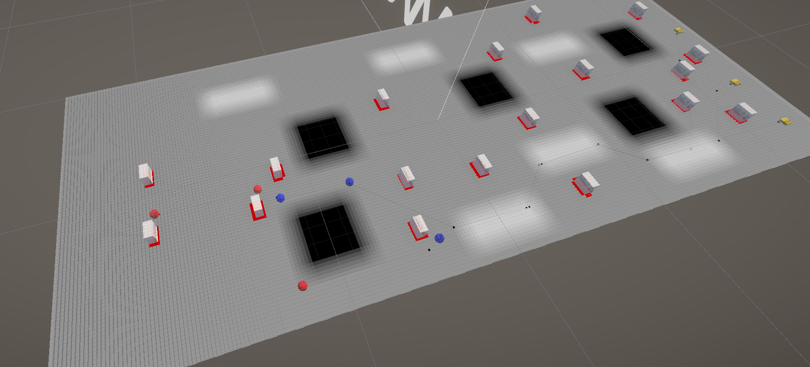
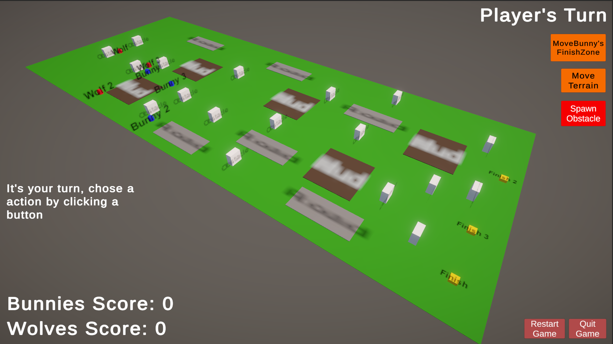
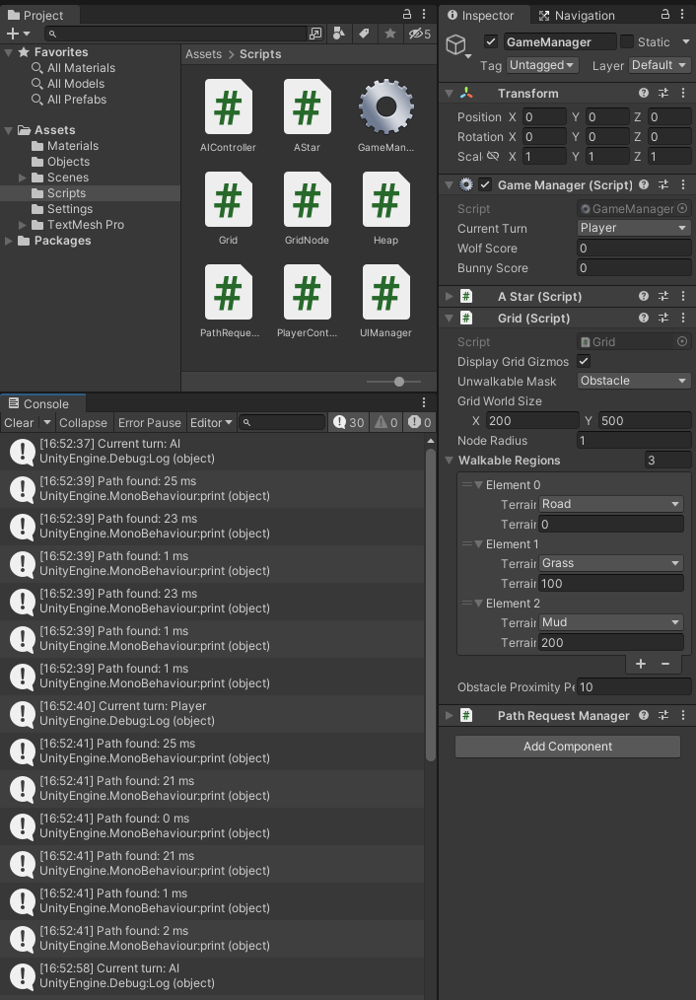

Gamefied A*
University Solo Work
- In this game prototype the player must decide between helping the wolf or the rabbit reach their respective goals. The wolf is chasing the rabbit and will succeed if he gets in contact with the rabbit to eat it, while the rabbit is moving towards a safe location on the opposite side of the map. The player is able to place or move objects on the map that will affect the path the wolf and the rabbit will take. For example, the player could place an obstacle over their path to create a barrier that the wolf or rabbit must navigate around, or just create a clear path for one of the animals by moving objects out of the way. There will also be the option of moving parts of the terrain around which will either slow down or speed up the animals, and even move the rabbit’s safe location into a different spot to make him run around.
- As this is a solo project everything was done by me. In here I combine the A* Pathfinding Algorithm and turn base mechanics to not just showcase an understanding of a more advanced tehnique, but make it interractive and turn it into a game. This project makes use of A* algorithm, Singleton Pattern, Delegates and Coroutines.
Images & Videos


